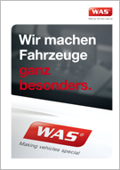

Wir machen aus Fahrzeugen etwas Besonderes. WAS Sonderfahrzeuge und Ambulanzfahrzeuge.
WAS ist ein führender Hersteller von Sonderfahrzeugen und Ambulanzfahrzeugen. Hierfür gibt es viele Gründe. Die meisten stecken in einem WAS Fahrzeug selbst: die innovative Technik, die passgenaue Ergonomie, die hochwertige Verarbeitung made in Germany und das Know-how der Mitarbeiter. Ein WAS Fahrzeug macht Retter stärker und Einsätze effizienter.
Nicht alles, was Kunden und Retter an WAS schätzen, können wir in unsere Fahrzeuge einbauen: Zum Beispiel den Ansprechpartner, der persönlich für den Kunden da ist und ihn von der Idee bis zur Nutzung begleitet. Oder den qualifizierten technischen Support, der schnell und verlässlich hilft. Ansprechpartner und Spezialisten sind die Extras, die Fahrzeuge und Retter einsatzfähig halten – auf Jahre hinaus. Bei uns serienmäßig.
Der WAS Faktor
Über 350 Mitarbeiter fertigen in Wietmarschen anspruchsvolle Sonder- und Ambulanzfahrzeuge. Großserien, Kleinserien, Einzelfahrzeuge. Entwickler, Techniker, Elektroniker, Fahrzeugbauer und weitere Spezialisten arbeiten hier Hand in Hand. Denn Sonderfahrzeuge von WAS sind zu 90 % Handarbeit. Und Detail für Detail wird aus einem leistungsstarken Basisfahrzeug etwas Besonderes: ein Spezialfahrzeug Marke WAS.

Das Besondere an WAS:
Unsere Imagebroschüre zum Download.
Sicherheit
WAS gibt Vertrauen und Sicherheit:
für Einsatzkräfte, Insassen und Kunden
Ein Fahrzeug, das nicht nur alle Standards erfüllt, sondern auch jederzeit einsatzbereit und zuverlässig ist, vermittelt Sicherheit. Das gilt für den RTW oder NEF im Rettungsdienst genauso wie zum Beispiel für Fahrzeuge von Justiz und Polizei. Um diese Sicherheit versprechen zu können, tun wir ein bisschen mehr als es Industrie-Standards verlangen.
Mobile Ausrüstungskontrolle mit RFID: WAS Smart Check mobile
- Jetzt haben Rettungskräfte auch im Einsatz jederzeit 100% Kontrolle über ihre Ausrüstung. WAS Smart Check mobile informiert noch am Einsatzort in Echtzeit über vertauschte oder verlorene Einsatzmittel und schützt so vor dem Verlust wertvoller medizinischer Geräte. Darüber hinaus meldet das System auch Verfallsdaten und Wartungsintervalle. Mit WAS Smart Check mobile kann im manuellen oder im automatischen Betrieb gearbeitet werden. Im Automatik-Betrieb wird das System bei Ankunft am Einsatzort aktiviert. Nach einem einstellbaren Zyklus führt das System den Fahrzeugcheck durch. Alternativ kann nach Beendigung des Einsatzes per Startbutton auf dem Tablet-Monitor im Fahrzeug der Check manuell gestartet werden. Neben der Bestandskontrolle wird angezeigt, wann die Geräte zum letzten Mal im Fahrzeug waren. Diese Information grenzt bei einem etwaigen Verlust die Suche ein und spart Zeit. Das System verwendet wie auch das stationäre System die passive RFID-Technik und ist mit der stationären Version kompatibel.
mehr
Qualität
Qualität kann man nicht kaufen.
Man muss sie bauen.
Der Qualitätsanspruch von WAS verlangt Material und Mitarbeitern einiges ab – von der Entwicklung einer Idee bis zum Service für das fertige Produkt. Dass wir unsere WAS Qualität über den gesamten Produktionsprozess und über Fahrzeugserien hinweg hoch halten können, erfordert kontinuierliches und lückenloses Qualitätsmanagement.
Mobile Ausrüstungskontrolle mit RFID: WAS Smart Check mobile
- Jetzt haben Rettungskräfte auch im Einsatz jederzeit 100% Kontrolle über ihre Ausrüstung. WAS Smart Check mobile informiert noch am Einsatzort in Echtzeit über vertauschte oder verlorene Einsatzmittel und schützt so vor dem Verlust wertvoller medizinischer Geräte. Darüber hinaus meldet das System auch Verfallsdaten und Wartungsintervalle. Mit WAS Smart Check mobile kann im manuellen oder im automatischen Betrieb gearbeitet werden. Im Automatik-Betrieb wird das System bei Ankunft am Einsatzort aktiviert. Nach einem einstellbaren Zyklus führt das System den Fahrzeugcheck durch. Alternativ kann nach Beendigung des Einsatzes per Startbutton auf dem Tablet-Monitor im Fahrzeug der Check manuell gestartet werden. Neben der Bestandskontrolle wird angezeigt, wann die Geräte zum letzten Mal im Fahrzeug waren. Diese Information grenzt bei einem etwaigen Verlust die Suche ein und spart Zeit. Das System verwendet wie auch das stationäre System die passive RFID-Technik und ist mit der stationären Version kompatibel.
mehr
Ergonomie
Ergonomie im Sonderfahrzeug heißt Alltagssicherheit im Einsatz.
Ein von WAS maßgefertigtes Sonderfahrzeug ist in hohem Maße ergonomisch. Es erfüllt alle allgemeinen Anforderungen eines Einsatzes. Und darüber hinaus die besonderen Anforderungen der Einsatzkräfte. Das erreichen unsere Spezialisten durch passgenau verbaute Technik und eine Ausstattung, die eigens für den Kundenauftrag konzipiert wird.
Mobile Ausrüstungskontrolle mit RFID: WAS Smart Check mobile
- Jetzt haben Rettungskräfte auch im Einsatz jederzeit 100% Kontrolle über ihre Ausrüstung. WAS Smart Check mobile informiert noch am Einsatzort in Echtzeit über vertauschte oder verlorene Einsatzmittel und schützt so vor dem Verlust wertvoller medizinischer Geräte. Darüber hinaus meldet das System auch Verfallsdaten und Wartungsintervalle. Mit WAS Smart Check mobile kann im manuellen oder im automatischen Betrieb gearbeitet werden. Im Automatik-Betrieb wird das System bei Ankunft am Einsatzort aktiviert. Nach einem einstellbaren Zyklus führt das System den Fahrzeugcheck durch. Alternativ kann nach Beendigung des Einsatzes per Startbutton auf dem Tablet-Monitor im Fahrzeug der Check manuell gestartet werden. Neben der Bestandskontrolle wird angezeigt, wann die Geräte zum letzten Mal im Fahrzeug waren. Diese Information grenzt bei einem etwaigen Verlust die Suche ein und spart Zeit. Das System verwendet wie auch das stationäre System die passive RFID-Technik und ist mit der stationären Version kompatibel.
mehr
Effizienz
Wir investieren viel Zeit in die Effizienz.
Effizient sein heißt bei WAS: am Anfang Zeit investieren, um im Einsatz keine zu verlieren. Erst sprechen wir mit unserem Kunden ausführlich über das Projekt. Dann sprechen wir mit denen, die sich auskennen: mit Rettern, Helfern, Fahrern oder Patienten. Wenn dann alles auf dem Tisch liegt, machen wir uns an die Arbeit.
Mobile Ausrüstungskontrolle mit RFID: WAS Smart Check mobile
- Jetzt haben Rettungskräfte auch im Einsatz jederzeit 100% Kontrolle über ihre Ausrüstung. WAS Smart Check mobile informiert noch am Einsatzort in Echtzeit über vertauschte oder verlorene Einsatzmittel und schützt so vor dem Verlust wertvoller medizinischer Geräte. Darüber hinaus meldet das System auch Verfallsdaten und Wartungsintervalle. Mit WAS Smart Check mobile kann im manuellen oder im automatischen Betrieb gearbeitet werden. Im Automatik-Betrieb wird das System bei Ankunft am Einsatzort aktiviert. Nach einem einstellbaren Zyklus führt das System den Fahrzeugcheck durch. Alternativ kann nach Beendigung des Einsatzes per Startbutton auf dem Tablet-Monitor im Fahrzeug der Check manuell gestartet werden. Neben der Bestandskontrolle wird angezeigt, wann die Geräte zum letzten Mal im Fahrzeug waren. Diese Information grenzt bei einem etwaigen Verlust die Suche ein und spart Zeit. Das System verwendet wie auch das stationäre System die passive RFID-Technik und ist mit der stationären Version kompatibel.
mehr
Umweltschutz
Ein hoher Anspruch sichert Qualität.
Und die Grundlagen unserer Umwelt.
WAS fertigt Sonderfahrzeuge, denen Menschen wichtige Aufgaben oder das Leben von Insassen anvertrauen. Deshalb wissen wir, wie wichtig Verantwortung ist. Vielleicht ist das ein Grund, warum wir neben unserem Qualitäts- auch ein Umweltmanagement-System eingeführt haben. Es soll uns helfen, über den gesamten Produktionsprozess nachhaltig und umweltverträglich zu handeln.
Mobile Ausrüstungskontrolle mit RFID: WAS Smart Check mobile
- Jetzt haben Rettungskräfte auch im Einsatz jederzeit 100% Kontrolle über ihre Ausrüstung. WAS Smart Check mobile informiert noch am Einsatzort in Echtzeit über vertauschte oder verlorene Einsatzmittel und schützt so vor dem Verlust wertvoller medizinischer Geräte. Darüber hinaus meldet das System auch Verfallsdaten und Wartungsintervalle. Mit WAS Smart Check mobile kann im manuellen oder im automatischen Betrieb gearbeitet werden. Im Automatik-Betrieb wird das System bei Ankunft am Einsatzort aktiviert. Nach einem einstellbaren Zyklus führt das System den Fahrzeugcheck durch. Alternativ kann nach Beendigung des Einsatzes per Startbutton auf dem Tablet-Monitor im Fahrzeug der Check manuell gestartet werden. Neben der Bestandskontrolle wird angezeigt, wann die Geräte zum letzten Mal im Fahrzeug waren. Diese Information grenzt bei einem etwaigen Verlust die Suche ein und spart Zeit. Das System verwendet wie auch das stationäre System die passive RFID-Technik und ist mit der stationären Version kompatibel.
mehr
Compliance
WAS hält sich an Regeln.
Für uns ist Compliance mehr als nur ein Wort.
Als international tätiges Unternehmen wünschen wir uns die gleichen Wettbewerbsvoraussetzungen für alle Teilnehmer und Anbieter. Deshalb sind wir mit gutem Beispiel vorangegangen: Gemeinsam mit einer renommierten, international tätigen Expertengruppe haben wir ein Compliance Management System (CMS) entwickelt. Es schreibt Regeln im Umgang mit Kunden, Marktteilnehmern und Lieferanten verbindlich fest, an die wir uns halten.
Mobile Ausrüstungskontrolle mit RFID: WAS Smart Check mobile
- Jetzt haben Rettungskräfte auch im Einsatz jederzeit 100% Kontrolle über ihre Ausrüstung. WAS Smart Check mobile informiert noch am Einsatzort in Echtzeit über vertauschte oder verlorene Einsatzmittel und schützt so vor dem Verlust wertvoller medizinischer Geräte. Darüber hinaus meldet das System auch Verfallsdaten und Wartungsintervalle. Mit WAS Smart Check mobile kann im manuellen oder im automatischen Betrieb gearbeitet werden. Im Automatik-Betrieb wird das System bei Ankunft am Einsatzort aktiviert. Nach einem einstellbaren Zyklus führt das System den Fahrzeugcheck durch. Alternativ kann nach Beendigung des Einsatzes per Startbutton auf dem Tablet-Monitor im Fahrzeug der Check manuell gestartet werden. Neben der Bestandskontrolle wird angezeigt, wann die Geräte zum letzten Mal im Fahrzeug waren. Diese Information grenzt bei einem etwaigen Verlust die Suche ein und spart Zeit. Das System verwendet wie auch das stationäre System die passive RFID-Technik und ist mit der stationären Version kompatibel.
mehr
Unsere WAS
Qualitäts- und Umweltpolitik.